Debugging with Thonny¶
On this page we will learn
- what logic errors and bugs are
- how to control Thonny's debugger with Step into, Step over, Step out and Resume
- how to use breakpoints to pause a program where we think the bug is
- how to use the debugger to find and fix a logic error
Everyone makes mistakes, even experienced programmers. In this guide we will learn how to use Thonny's debugger to find and fix mistakes in our code.
Programming mistakes¶
Python is good at finding some mistakes, like syntax errors (when the code breaks Python's rules) and run-time errors (when something goes wrong while the program is running).
There is another type of mistake called a logic error, which we met in Stage 4. This happens when our code runs without crashing, but it doesn't do what we expected.
For example, the program below is in the guides folder of the tutorial files as buggy_code.py.
The program should show _h_e_l_l_o_. When we run it, it actually shows o_. This means there is a logic error.
Logic errors cause unexpected results called bugs. Debugging is the process of finding and fixing bugs. A debugger is a tool that helps us track down bugs by showing what our program is doing, step by step.
Setting up Thonny's debugger¶
-
Open the View menu and make sure there is a tick next to Stack and Variables.
These panels show which part of the program is running and what values it has stored.
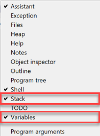
-
To start the debugger, click the Debug button.
Controlling the debugger¶
To learn how the debugger works, let's start with a program that has no bugs. Type the code below into Thonny and save it as debug_names.py.
Now click Debug. Thonny should look like the image below.
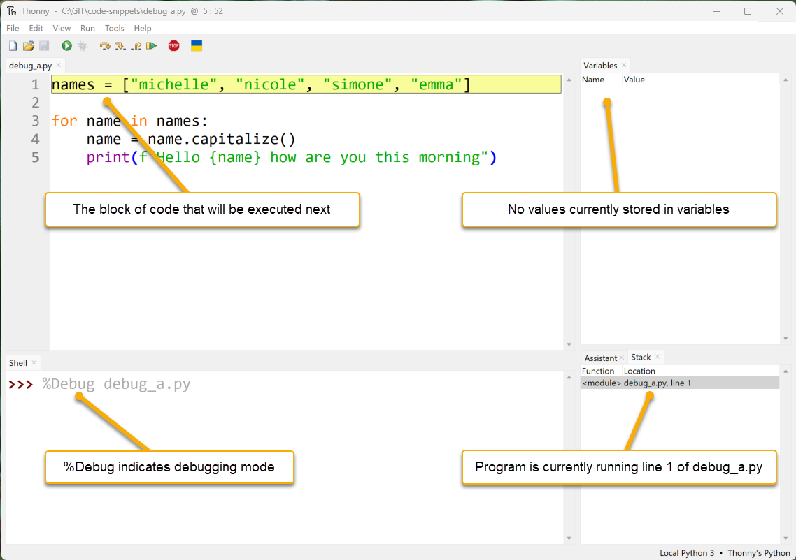
- Code panel: Thonny has paused the program. The yellow highlight shows the next code that will run.
- Variables panel: no variables are shown yet, because nothing has been stored in memory.
- Shell panel:
%Debugis the command Thonny used to start the program. - Stack panel: shows which part of the program is currently running.
New debugging buttons are now available. Let's see how they work.
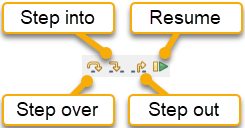
Step into¶
-
Click Step into.
Thonny runs the highlighted code. The new highlight shows what Python will run next: the list
["michelle", "nicole", "simone", "emma"].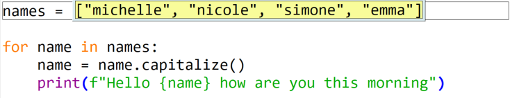
-
Click Step into again.
"michelle"is highlighted. Python is about to read this value. -
Keep stepping.
"michelle"turns blue, which shows that Python has read that value.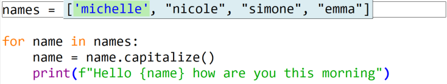
-
Click Step into four more times (or press F7).
Python has now read all of the strings.
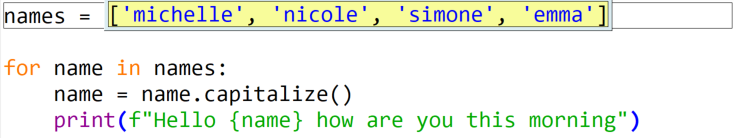
-
Click Step into again.
Python is ready to store the list in the variable
names.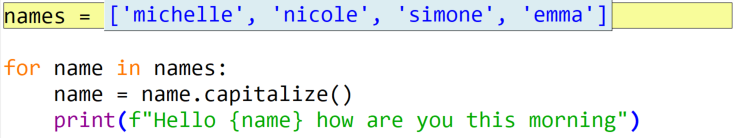
-
Click Step into again.
The Variables panel now shows that
namesstores["michelle", "nicole", "simone", "emma"]. The highlight covers the wholeforloop, because Thonny is showing all the code that belongs to it.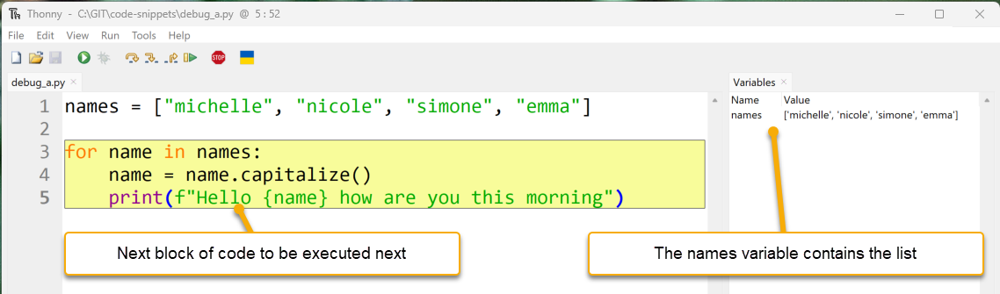
-
Click Step into.
The next part of the code to run is
names, the first part of theforloop statement.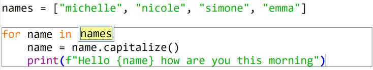
-
Click Step into again.
Thonny replaces
nameswith the list stored inside thenamesvariable.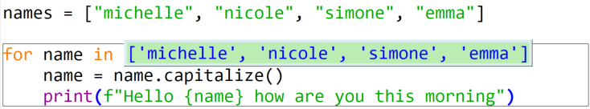
-
Click Step into again.
Because this is a
forloop, Python reads the first item in the list ("michelle").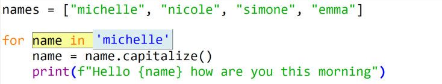
-
Click Step into again.
Line 4 is highlighted. The value
"michelle"is now stored in the variablename, as the Variables panel shows.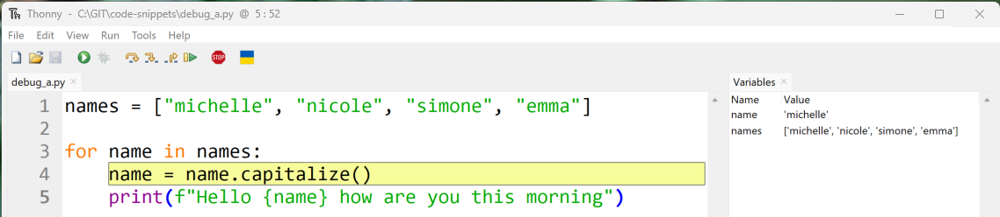
nameandnamesDon't mix up
nameandnames. They look similar, but Python treats them as different variables:nameis the variable used inside theforloopnamesis the list that the loop goes through
-
Click Step into three more times.
Thonny highlights
name.capitalize(), thenname, then replacesnamewith"michelle".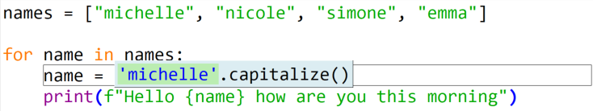
-
Click Step into three more times.
The
capitalize()method changes"michelle"to"Michelle", and the variablenameis updated to store"Michelle". Line 4 is finished, so line 5 is highlighted next.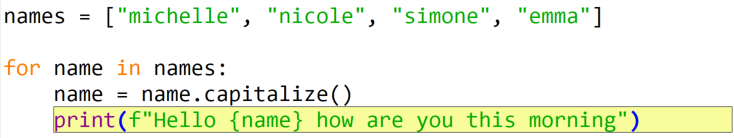
-
Click Step into five more times.
These steps show how Python builds the f-string and prints it in the Shell. When
print()runs, it gives back a value calledNone.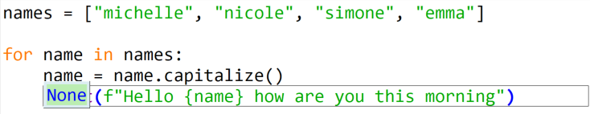
-
Click Step into once more.
We're back at line 3. The
forloop moves to the next item in the list,"nicole".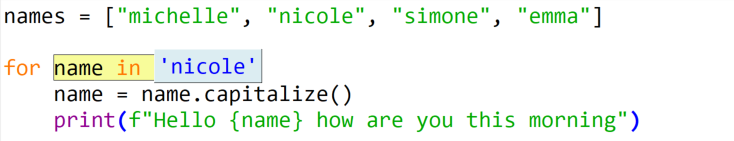
-
Click Step into one more time.
Python stores
"nicole"inname. We'll use this time through the loop to explore Step over.
Step over¶
Step over runs the highlighted code without showing all the small steps.
-
Look at the highlighted line 4. When it runs, it will take the value in
name("nicole"), change it to"Nicole", and store the new value back inname.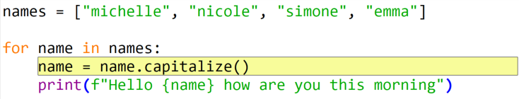
-
Click Step over.
The value stored in
namehas been updated in one step.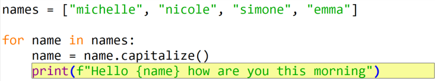
-
Click Step over again.
Line 5 runs, and the highlight returns to the
forstatement on line 3.When to use Step over
Use Step over when you're confident the highlighted code works. Skipping the parts that aren't causing problems helps us find the bug faster.
-
Click Step over and then Step into until the debugger matches the image below.
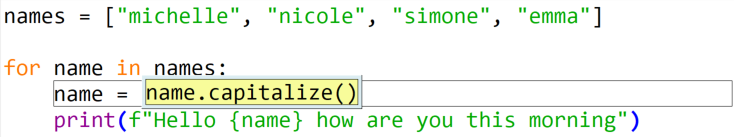
Step out¶
Step out finishes the rest of the current piece of code.
- Look at the grey box around line 4. It shows that we're inside that line of code.
-
Click Step out.
Thonny jumps back out and highlights all of line 4 again.
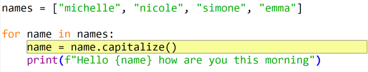
-
Click Step out again.
The debugger moves up one more level, outside the
forloop, and the program finishes.
Resume and breakpoints¶
The Resume button works with breakpoints. A breakpoint is a place where we tell the program to pause. Resume runs the program until it reaches a breakpoint.
-
Click on the line number
4.A red dot appears next to the line number. This is a breakpoint.
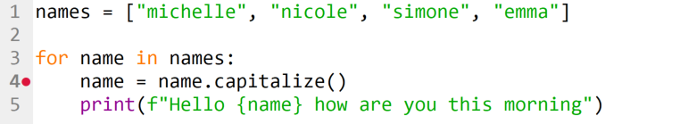
-
Click Debug.
The program runs and pauses at the breakpoint. We can check the current values in the Variables panel.
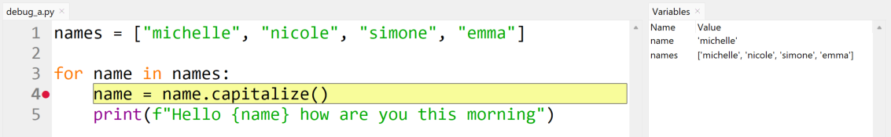
-
Click Resume.
The program keeps running and pauses at the next breakpoint. This is line 4 again, but on the second time through the loop. Notice the changed values in the Variables panel.
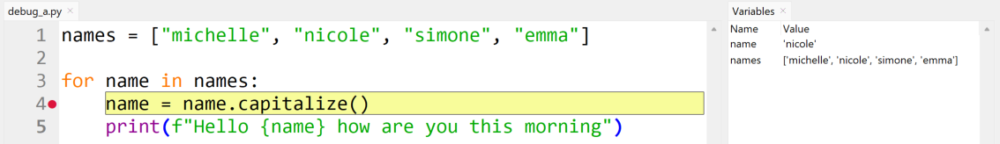
Now that we know how to use Thonny's debugger, let's go back and debug buggy_code.py.
Debugging a logic error¶
Guess where the bug is¶
The first step is to find the part of the code that might have the bug. We might not know the exact line, so we make a good guess about which section could be wrong.
buggy_code.py has two main parts:
- a function (lines 1–5)
- the main program (lines 7–8)
Line 7 creates a variable called phrase with the value "hello", and line 8 prints the result of add_underscores(phrase). These two lines look correct, so the bug is probably in the function.
The first line inside the function (line 2) creates a variable called new_word with the value "_". That looks correct too, so the bug is likely inside the for loop.
Set a breakpoint¶
-
Add a breakpoint on line 3, the start of the
forloop.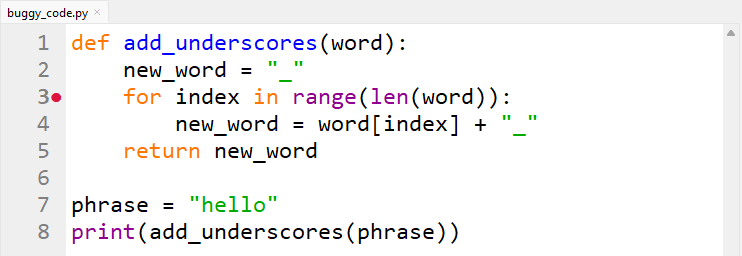
-
Click Debug.
Thonny runs the program until it reaches the breakpoint.
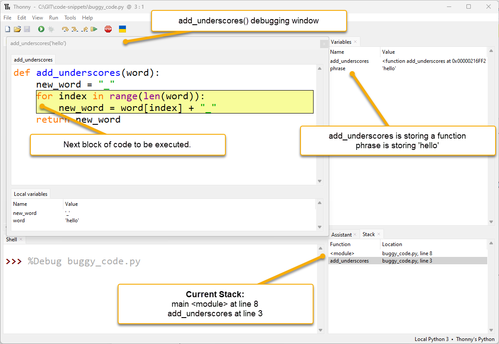
There are some new features here:
- An extra debugging window: Thonny opens a new window for the function
add_underscores("hello"). This happens whenever Python starts running a function. The bottom of this window shows the function's local variables: variables that only exist inside that function. - Two stack entries: the Stack panel shows
<module>(the main program) andadd_underscores(the function). The program is at line 8 in the main program, and line 3 inside the function.
Stack timeline
- Line 8 in the main program calls the
add_underscoresfunction. - Python pauses the main program at line 8 and waits for the function to finish.
- When the function finishes, the main program continues from line 8.
The
add_underscoreswindow shows two variables:wordis"hello"andnew_wordis"_". These are correct so far.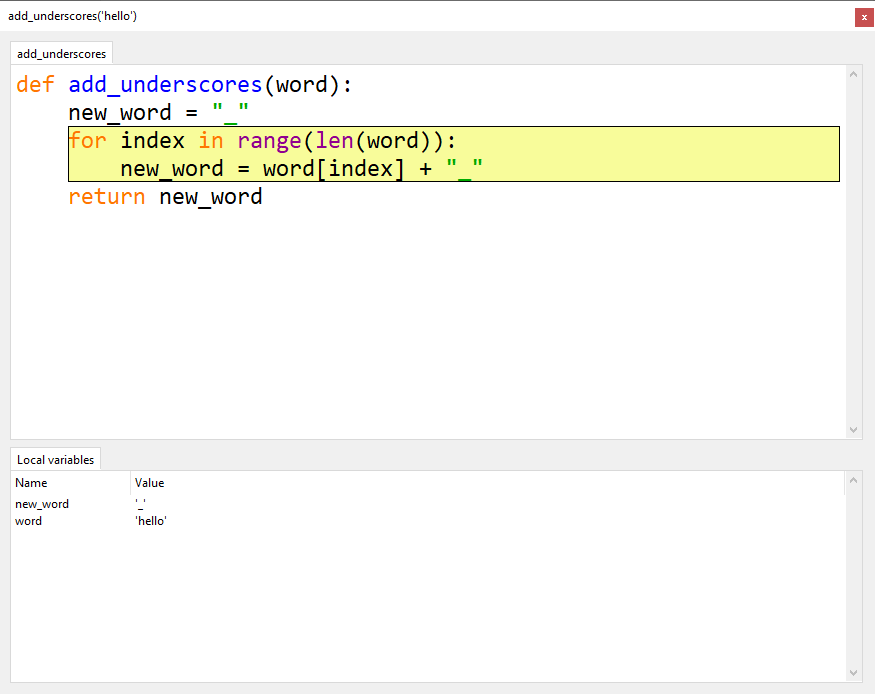
- An extra debugging window: Thonny opens a new window for the function
-
Click Step into once, then Step over twice.
new_word = word[index] + "_"is now highlighted and ready to run. The local variableindexstores0, which is correct for the first time through the loop.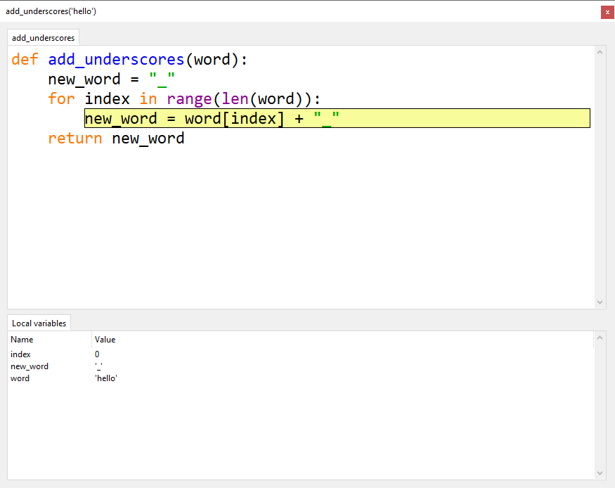
Can't see the index variable?
Make the Local variables panel bigger.
-
Click Step over to run the line.
new_wordnow stores"h_", but we wanted"_h_". Part of the value was replaced instead of added to. This is exactly where the bug happens.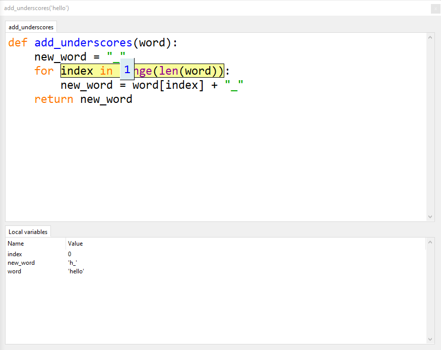
Investigate the bug¶
Now we know the bug is in line 4, let's look more closely at what Python is doing there.
- Click Stop, then click Debug again.
- Click Step into once, then Step over twice, so line 4 is highlighted again.
-
Click Step into three times, checking the values each time. Everything still looks correct.
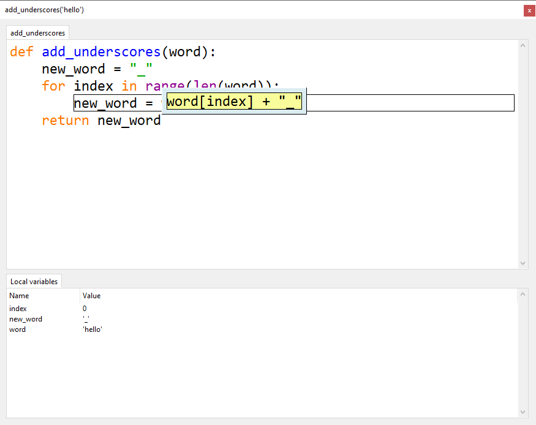
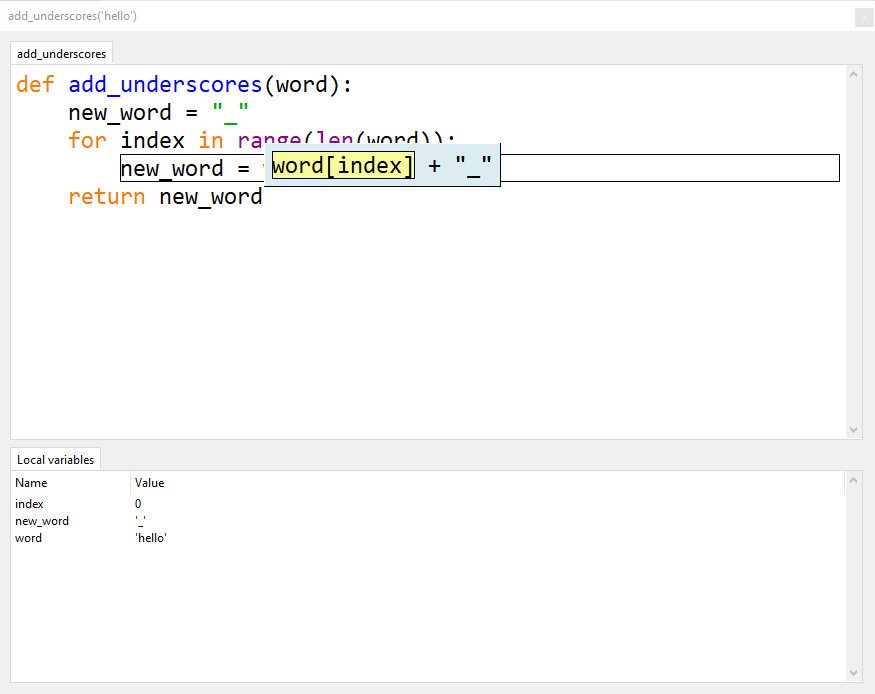
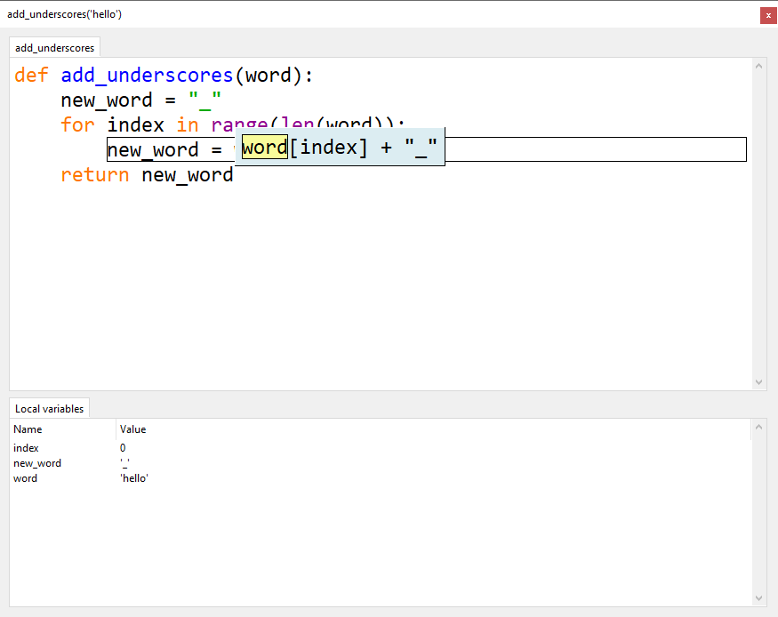
-
Keep clicking Step into and watch the Local variables panel. Stop when the window looks like the one below.
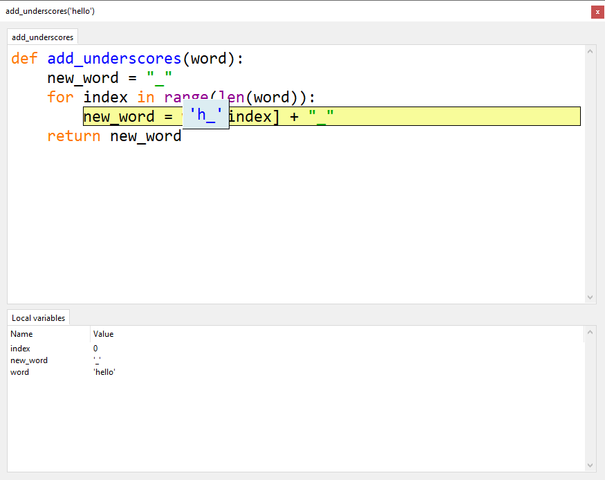
Python is about to store "h_" in new_word. That's wrong: we want it to store "_h_". Now we know exactly where the bug is, we need to work out why it's happening.
Fix the bug¶
The add_underscores() function should put a _ between each letter. It should do this by adding the next letter and a _ to the value already stored in new_word.
But the code replaces new_word each time, so it loses all the letters added before. To fix this, we need to add the current value of new_word at the front:
-
Stop debugging and change line 4 to the code above.
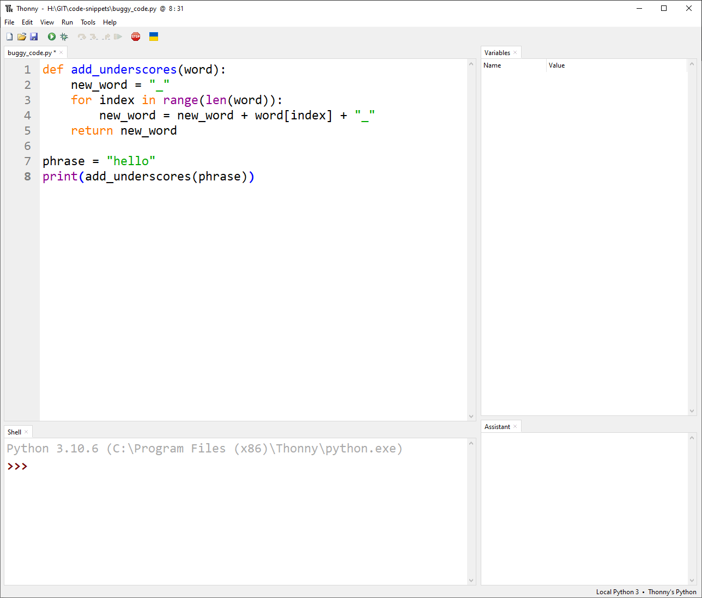
-
Run the program normally.
The Shell should show
_h_e_l_l_o_. We have found and fixed a bug.